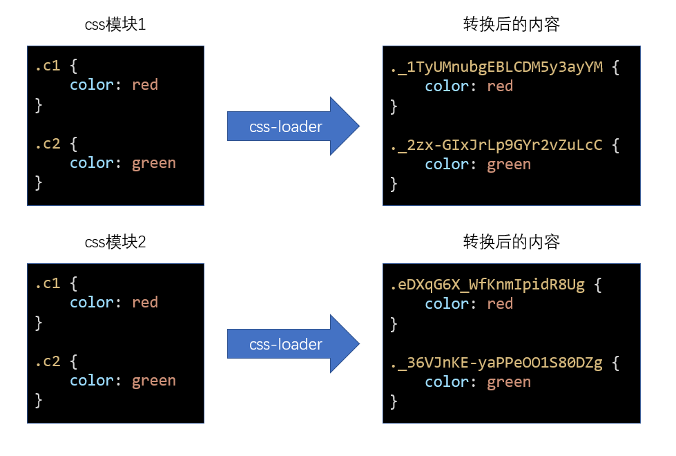
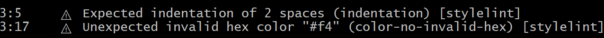

css工程化概述
css的问题
类名冲突的问题
当你写一个css类的时候，你是写全局的类呢，还是写多个层级选择后的类呢？
你会发现，怎么都不好
- 过深的层级不利于编写、阅读、压缩、复用
- 过浅的层级容易导致类名冲突
一旦样式多起来，这个问题就会变得越发严重，其实归根结底，就是类名冲突不好解决的问题
重复样式
这种问题就更普遍了，一些重复的样式值总是不断的出现在css代码中，维护起来极其困难
比如，一个网站的颜色一般就那么几种：
- primary
- info
- warn
- error
- success
如果有更多的颜色，都是从这些色调中自然变化得来，可以想象，这些颜色会到处充斥到诸如背景、文字、边框中，一旦要做颜色调整，是一个非常大的工程
css文件细分问题
在大型项目中，css也需要更细的拆分，这样有利于css代码的维护。
比如，有一个做轮播图的模块，它不仅需要依赖js功能，还需要依赖css样式，既然依赖的js功能仅关心轮播图，那css样式也应该仅关心轮播图，由此类推，不同的功能依赖不同的css样式、公共样式可以单独抽离，这样就形成了不同于过去的css文件结构：文件更多、拆分的更细
而同时，在真实的运行环境下，我们却希望文件越少越好，这种情况和JS遇到的情况是一致的
因此，对于css，也需要工程化管理
从另一个角度来说，css的工程化会遇到更多的挑战，因为css不像JS，它的语法本身经过这么多年并没有发生多少的变化（css3也仅仅是多了一些属性而已），对于css语法本身的改变也是一个工程化的课题
如何解决
这么多年来，官方一直没有提出方案来解决上述问题
一些第三方机构针对不同的问题，提出了自己的解决方案
解决类名冲突
一些第三方机构提出了一些方案来解决该问题，常见的解决方案如下：
命名约定
即提供一种命名的标准，来解决冲突，常见的标准有：
- BEM
- OOCSS
- AMCSS
- SMACSS
- 其他
css in js
这种方案非常大胆，它觉得，css语言本身几乎无可救药了，干脆直接用js对象来表示样式，然后把样式直接应用到元素的style中
这样一来，css变成了一个一个的对象，就可以完全利用到js语言的优势，你可以：
- 通过一个函数返回一个样式对象
- 把公共的样式提取到公共模块中返回
- 应用js的各种特性操作对象，比如：混合、提取、拆分
- 更多的花样
这种方案在手机端的React Native中大行其道
css module
非常有趣和好用的css模块化方案，编写简单，绝对不重名
具体的课程中详细介绍
解决重复样式的问题
css in js
这种方案虽然可以利用js语言解决重复样式值的问题，但由于太过激进，很多习惯写css的开发者编写起来并不是很适应
预编译器
有些第三方搞出一套css语言的进化版来解决这个问题，它支持变量、函数等高级语法，然后经过编译器将其编译成为正常的css
这种方案特别像构建工具，不过它仅针对css
常见的预编译器支持的语言有：
- less
- sass
解决css文件细分问题
这一部分，就要依靠构建工具，例如webpack来解决了
利用一些loader或plugin来打包、合并、压缩css文件
利用webpack拆分css {ignore}
要拆分css，就必须把css当成像js那样的模块；要把css当成模块，就必须有一个构建工具（webpack），它具备合并代码的能力
而webpack本身只能读取css文件的内容、将其当作JS代码进行分析，因此，会导致错误
于是，就必须有一个loader，能够将css代码转换为js代码
css-loader
css-loader的作用，就是将css代码转换为js代码
它的处理原理极其简单：将css代码作为字符串导出
例如：
1 | .red{ |
经过css-loader转换后变成js代码：
1 | module.exports = `.red{ |
上面的js代码是经过我简化后的，不代表真实的css-loader的转换后代码，css-loader转换后的代码会有些复杂，同时会导出更多的信息，但核心思想不变
再例如：
1 | .red{ |
经过css-loader转换后变成js代码：
1 | var import1 = require("./bg.png"); |
这样一来，经过webpack的后续处理，会把依赖./bg.png添加到模块列表，然后再将代码转换为
1 | var import1 = __webpack_require__("./src/bg.png"); |
再例如：
1 | @import "./reset.css"; |
会转换为：
1 | var import1 = require("./reset.css"); |
总结，css-loader干了什么：
- 将css文件的内容作为字符串导出
- 将css中的其他依赖作为require导入，以便webpack分析依赖
style-loader
由于css-loader仅提供了将css转换为字符串导出的能力，剩余的事情要交给其他loader或plugin来处理
style-loader可以将css-loader转换后的代码进一步处理，将css-loader导出的字符串加入到页面的style元素中
例如：
1 | .red{ |
经过css-loader转换后变成js代码：
1 | module.exports = `.red{ |
经过style-loader转换后变成：
1 | module.exports = `.red{ |
以上代码均为简化后的代码，并不代表真实的代码
style-loader有能力避免同一个样式的重复导入
BEM
BEM是一套针对css类样式的命名方法。
其他命名方法还有：OOCSS、AMCSS、SMACSS等等
BEM全称是：Block Element Modifier
一个完整的BEM类名：block__element_modifier，例如：banner__dot_selected，可以表示：轮播图中，处于选中状态的小圆点

三个部分的具体含义为：
- Block：页面中的大区域，表示最顶级的划分，例如：轮播图(
banner)、布局(layout)、文章(article)等等 - element：区域中的组成部分，例如：轮播图中的横幅图片(
banner__img)、轮播图中的容器（banner__container）、布局中的头部(layout__header)、文章中的标题(article_title) - modifier：可选。通常表示状态，例如：处于展开状态的布局左边栏（
layout__left_expand）、处于选中状态的轮播图小圆点(banner__dot_selected)
在某些大型工程中，如果使用BEM命名法，还可能会增加一个前缀，来表示类名的用途，常见的前缀有：
- l: layout，表示这个样式是用于布局的
- c: component，表示这个样式是一个组件，即一个功能区域
- u: util，表示这个样式是一个通用的、工具性质的样式
- j: javascript，表示这个样式没有实际意义，是专门提供给js获取元素使用的
css in js
css in js 的核心思想是：用一个JS对象来描述样式，而不是css样式表
例如下面的对象就是一个用于描述样式的对象：
1 | const styles = { |
由于这种描述样式的方式根本就不存在类名，自然不会有类名冲突
至于如何把样式应用到界面上，不是它所关心的事情，你可以用任何技术、任何框架、任何方式将它应用到界面。
后续学习的vue、react都支持css in js，可以非常轻松的应用到界面
css in js的特点：
- 绝无冲突的可能：由于它根本不存在类名，所以绝不可能出现类名冲突
- 更加灵活：可以充分利用JS语言灵活的特点，用各种招式来处理样式
- 应用面更广：只要支持js语言，就可以支持css in js，因此，在一些用JS语言开发移动端应用的时候非常好用，因为移动端应用很有可能并不支持css
- 书写不便：书写样式，特别是公共样式的时候，处理起来不是很方便
- 在页面中增加了大量冗余内容：在页面中处理css in js时，往往是将样式加入到元素的style属性中，会大量增加元素的内联样式，并且可能会有大量重复，不易阅读最终的页面代码
css module {ignore}
通过命名规范来限制类名太过死板，而css in js虽然足够灵活，但是书写不便。
css module 开辟一种全新的思路来解决类名冲突的问题
思路
css module 遵循以下思路解决类名冲突问题：
- css的类名冲突往往发生在大型项目中
- 大型项目往往会使用构建工具（webpack等）搭建工程
- 构建工具允许将css样式切分为更加精细的模块
- 同JS的变量一样，每个css模块文件中难以出现冲突的类名，冲突的类名往往发生在不同的css模块文件中
- 只需要保证构建工具在合并样式代码后不会出现类名冲突即可

实现原理
在webpack中，作为处理css的css-loader，它实现了css module的思想，要启用css module，需要将css-loader的配置modules设置为true。
css-loader的实现方式如下：

原理极其简单，开启了css module后，css-loader会将样式中的类名进行转换，转换为一个唯一的hash值。
由于hash值是根据模块路径和类名生成的，因此，不同的css模块，哪怕具有相同的类名，转换后的hash值也不一样。

如何应用样式
css module带来了一个新的问题：源代码的类名和最终生成的类名是不一样的，而开发者只知道自己写的源代码中的类名，并不知道最终的类名是什么，那如何应用类名到元素上呢？
为了解决这个问题，css-loader会导出原类名和最终类名的对应关系，该关系是通过一个对象描述的

这样一来，我们就可以在js代码中获取到css模块导出的结果，从而应用类名了
style-loader为了我们更加方便的应用类名，会去除掉其他信息，仅暴露对应关系
其他操作
全局类名
某些类名是全局的、静态的，不需要进行转换，仅需要在类名位置使用一个特殊的语法即可：
1 | :global(.main){ |
使用了global的类名不会进行转换，相反的，没有使用global的类名，表示默认使用了local
1 | :local(.main){ |
使用了local的类名表示局部类名，是可能会造成冲突的类名，会被css module进行转换
如何控制最终的类名
绝大部分情况下，我们都不需要控制最终的类名，因为控制它没有任何意义
如果一定要控制最终的类名，需要配置css-loader的localIdentName
其他注意事项
- css module往往配合构建工具使用
- css module仅处理顶级类名，尽量不要书写嵌套的类名，也没有这个必要
- css module仅处理类名，不处理其他选择器
- css module还会处理id选择器，不过任何时候都没有使用id选择器的理由
- 使用了css module后，只要能做到让类名望文知意即可，不需要遵守其他任何的命名规范
CSS预编译器 {ignore}
基本原理
编写css时，受限于css语言本身，常常难以处理一些问题：
- 重复的样式值：例如常用颜色、常用尺寸
- 重复的代码段：例如绝对定位居中、清除浮动
- 重复的嵌套书写
由于官方迟迟不对css语言本身做出改进，一些第三方机构开始想办法来解决这些问题
其中一种方案，便是预编译器
预编译器的原理很简单，即使用一种更加优雅的方式来书写样式代码，通过一个编译器，将其转换为可被浏览器识别的传统css代码

目前，最流行的预编译器有LESS和SASS，由于它们两者特别相似，因此仅学习一种即可（本课程学习LESS）
less官网：http://lesscss.org/
less中文文档1（非官方）：http://lesscss.cn/
less中文文档2（非官方）：https://less.bootcss.com/
sass官网：https://sass-lang.com/
sass中文文档1（非官方）：https://www.sass.hk/
sass中文文档2（非官方）：https://sass.bootcss.com/
LESS的安装和使用
从原理可知，要使用LESS，必须要安装LESS编译器
LESS编译器是基于node开发的，可以通过npm下载安装
1 | npm i -D less |
安装好了less之后，它提供了一个CLI工具lessc，通过该工具即可完成编译
1 | lessc less代码文件 编译后的文件 |
试一试:
新建一个index.less文件，编写内容如下：
1 | // less代码 |
运行命令：
1 | lessc index.less index.css |
可以看到编译之后的代码：
1 | .redcolor { |
LESS的基本使用
具体的使用见文档：https://less.bootcss.com/
- 变量
- 混合
- 嵌套
- 运算
- 函数
- 作用域
- 注释
- 导入
PostCss {ignore}
本节课的内容和webpack无关！！！
什么是PostCss
学习到现在，可以看出，CSS工程化面临着诸多问题，而解决这些问题的方案多种多样。
如果把CSS单独拎出来看，光是样式本身，就有很多事情要处理。
既然有这么多事情要处理，何不把这些事情集中到一起统一处理呢？
PostCss就是基于这样的理念出现的。
PostCss类似于一个编译器，可以将样式源码编译成最终的CSS代码
看上去是不是和LESS、SASS一样呢？
但PostCss和LESS、SASS的思路不同，它其实只做一些代码分析之类的事情，将分析的结果交给插件，具体的代码转换操作是插件去完成的。

官方的一张图更能说明postcss的处理流程：
这一点有点像webpack，webpack本身仅做依赖分析、抽象语法树分析，其他的操作是靠插件和加载器完成的。
官网地址：https://postcss.org/
github地址：https://github.com/postcss/postcss
安装
PostCss是基于node编写的，因此可以使用npm安装
1 | npm i -D postcss |
postcss库提供了对应的js api用于转换代码，如果你想使用postcss的一些高级功能，或者想开发postcss插件，就要api使用postcss，api的文档地址是：http://api.postcss.org/
不过绝大部分时候，我们都是使用者，并不希望使用代码的方式来使用PostCss
因此，我们可以再安装一个postcss-cli，通过命令行来完成编译
1 | npm i -D postcss-cli |
postcss-cli提供一个命令，它调用postcss中的api来完成编译
命令的使用方式为：
1 | postcss 源码文件 -o 输出文件 |
配置文件
和webpack类似，postcss有自己的配置文件，该配置文件会影响postcss的某些编译行为。
配置文件的默认名称是：postcss.config.js
例如：
1 | module.exports = { |
插件
光使用postcss是没有多少意义的，要让它真正的发挥作用，需要插件
postcss的插件市场：https://www.postcss.parts/
下面罗列一些postcss的常用插件
postcss-preset-env
过去使用postcss的时候，往往会使用大量的插件，它们各自解决一些问题
这样导致的结果是安装插件、配置插件都特别的繁琐
于是出现了这么一个插件postcss-preset-env，它称之为postcss预设环境，大意就是它整合了很多的常用插件到一起，并帮你完成了基本的配置，你只需要安装它一个插件，就相当于安装了很多插件了。
安装好该插件后，在postcss配置中加入下面的配置
1 | module.exports = { |
该插件的功能很多，下面一一介绍
自动的厂商前缀
某些新的css样式需要在旧版本浏览器中使用厂商前缀方可实现
例如
1 | ::placeholder { |
该功能在不同的旧版本浏览器中需要书写为
1 | ::-webkit-input-placeholder { |
要完成这件事情，需要使用autoprefixer库。
而postcss-preset-env内部包含了该库，自动有了该功能。
如果需要调整兼容的浏览器范围，可以通过下面的方式进行配置
方式1：在postcss-preset-env的配置中加入browsers
1 | module.exports = { |
方式2【推荐】：添加 .browserslistrc 文件
创建文件.browserslistrc，填写配置内容
1 | last 2 version |
方式3【推荐】：在package.json的配置中加入browserslist
1 | "browserslist": [ |
browserslist是一个多行的（数组形式的）标准字符串。
它的书写规范多而繁琐，详情见：https://github.com/browserslist/browserslist
一般情况下，大部分网站都使用下面的格式进行书写
1 | last 2 version |
last 2 version: 浏览器的兼容最近期的两个版本> 1% in CN: 匹配中国大于1%的人使用的浏览器，in CN可省略not ie <= 8: 排除掉版本号小于等于8的IE浏览器
默认情况下，匹配的结果求的是并集
你可以通过网站：https://browserl.ist/ 对配置结果覆盖的浏览器进行查询，查询时，多行之间使用英文逗号分割
browserlist的数据来自于CanIUse网站，由于数据并非实时的，所以不会特别准确
未来的CSS语法
CSS的某些前沿语法正在制定过程中，没有形成真正的标准，如果希望使用这部分语法，为了浏览器兼容性，需要进行编译
过去，完成该语法编译的是cssnext库，不过有了postcss-preset-env后，它自动包含了该功能。
你可以通过postcss-preset-env的stage配置，告知postcss-preset-env需要对哪个阶段的css语法进行兼容处理，它的默认值为2
1 | "postcss-preset-env": { |
一共有5个阶段可配置：
- Stage 0: Aspirational - 只是一个早期草案，极其不稳定
- Stage 1: Experimental - 仍然极其不稳定，但是提议已被W3C公认
- Stage 2: Allowable - 虽然还是不稳定，但已经可以使用了
- Stage 3: Embraced - 比较稳定，可能将来会发生一些小的变化，它即将成为最终的标准
- Stage 4: Standardized - 所有主流浏览器都应该支持的W3C标准
了解了以上知识后，接下来了解一下未来的css语法，尽管某些语法仍处于非常早期的阶段，但是有该插件存在，编译后仍然可以被浏览器识别
变量
未来的css语法是天然支持变量的
在:root{}中定义常用变量，使用--前缀命名变量
1 | :root{ |
编译后，仍然可以看到原语法，因为某些新语法的存在并不会影响浏览器的渲染，尽管浏览器可能不认识
如果不希望在结果中看到新语法，可以配置postcss-preset-env的preserve为false
自定义选择器
1 | @custom-selector :--heading h1, h2, h3, h4, h5, h6; |
编译后
1 | a:focus,a:hover{ |
嵌套
与LESS相同，只不过嵌套的选择器前必须使用符号&
1 | .a { |
编译后
1 | .a { |
postcss-apply
该插件可以支持在css中书写属性集
类似于LESS中的混入，可以利用CSS的新语法定义一个CSS代码片段，然后在需要的时候应用它
1 | :root { |
编译后
1 | .item{ |
实际上，该功能也属于cssnext，不知为何
postcss-preset-env没有支持
postcss-color-function
该插件支持在源码中使用一些颜色函数
1 | body { |
编译后
1 | body { |
[扩展]postcss-import
该插件可以让你在postcss文件中导入其他样式代码，通过该插件可以将它们合并
由于后续的课程中，会将postcss加入到webpack中，而webpack本身具有依赖分析的功能，所以该插件的实际意义不大
stylelint
在实际的开发中，我们可能会错误的或不规范的书写一些css代码，stylelint插件会即时的发现错误
由于不同的公司可能使用不同的CSS书写规范，stylelint为了保持灵活，它本身并没有提供具体的规则验证
你需要安装或自行编写规则验证方案
通常，我们会安装stylelint-config-standard库来提供标准的CSS规则判定
安装好后，我们需要告诉stylelint使用该库来进行规则验证
告知的方式有多种，比较常见的是使用文件.stylelintrc
1 | //.styleintrc |
此时，如果你的代码出现不规范的地方，编译时将会报出错误
1 | body { |

发生了两处错误：
- 缩进应该只有两个空格
- 十六进制的颜色值不正确
如果某些规则并非你所期望的，可以在配置中进行设置
1 | { |
设置为null可以禁用该规则，或者设置为4，表示一个缩进有4个空格。具体的设置需要参见stylelint文档：https://stylelint.io/
但是这种错误报告需要在编译时才会发生，如果我希望在编写代码时就自动在编辑器里报错呢？
既然想在编辑器里达到该功能，那么就要在编辑器里做文章
安装vscode的插件stylelint即可，它会读取你工程中的配置文件，按照配置进行实时报错
实际上，如果你拥有了
stylelint插件，可以不需要在postcss中使用该插件了
抽离css文件
目前，css代码被css-loader转换后，交给的是style-loader进行处理。
style-loader使用的方式是用一段js代码，将样式加入到style元素中。
而实际的开发中，我们往往希望依赖的样式最终形成一个css文件
此时，就需要用到一个库：mini-css-extract-plugin
该库提供了1个plugin和1个loader
- plugin：负责生成css文件
- loader：负责记录要生成的css文件的内容，同时导出开启css-module后的样式对象
使用方式：
1 | const MiniCssExtractPlugin = require("mini-css-extract-plugin") |
配置生成的文件名
同output.filename的含义一样，即根据chunk生成的样式文件名
配置生成的文件名，例如[name].[contenthash:5].css
默认情况下，每个chunk对应一个css文件